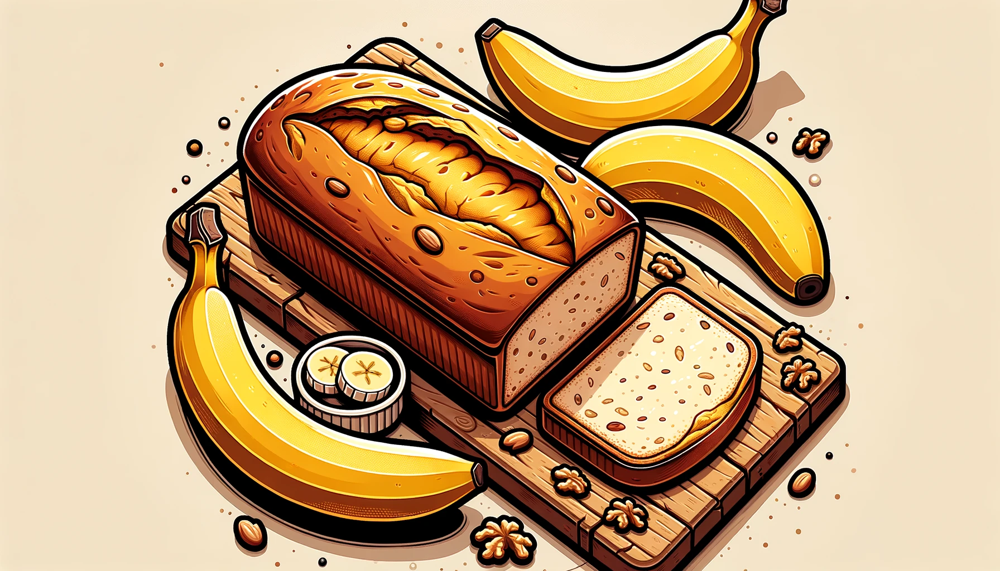

Banana Bread
Description
This banana bread recipe creates the most delicious, moist loaf with loads of banana flavor. Why compromise the banana flavor? Friends and family love my recipe and say it's by far the best! It tastes wonderful toasted. Enjoy!
Ingredients
- Flour
- Baking soda
- Salt
- Butter
- Brown sugar
- Eggs
- Bananas
Steps
- Combine the dry ingredients in one bowl.
- Beat the butter and sugar in another bowl. Add the eggs and mashed bananas.
- Add the wet mixture to the dry mixture.
- Pour the batter into a loaf pan and bake in a preheated oven.